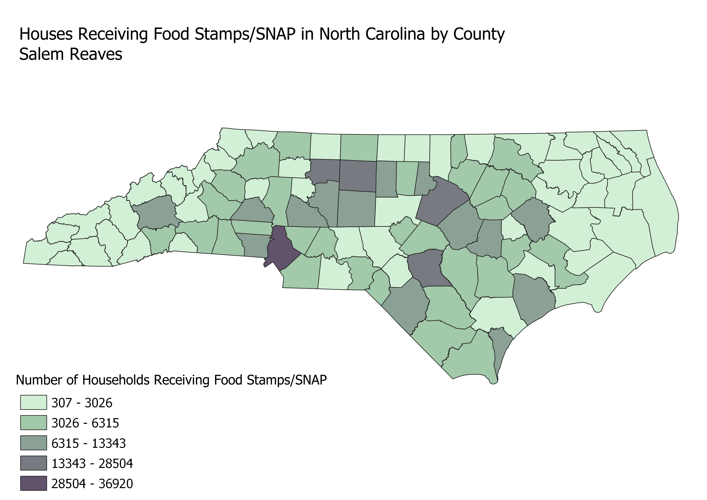

Homework 6.1: Census data choropleth
Salem Reaves
This map shows a breakdown of the number of households in each county that have received food stamps or Supplemental Nutrition Assistance Program (SNAP) benefits in the last five years.

Data used for this project
CSV dataset
Link to geojson
Home